Windows 启动器
已验证路径3ds2apple-0.1.5-windows-x64.zip
单个自包含的 3ds2apple-launcher.exe，无需 Mac 即可编译、签名、安装并推送。exe 未做代码签名：请先核对下方摘要，再选择「更多信息 → 仍要运行」。
SHA-256 摘要
e37a924e4f4f694544842a908432024d4712c8d7de6cb202506d9762845b2e16
AOT Nintendo 3DS 运行环境 · iPhone / iPad
游戏代码会在电脑上被提前重编译为原生 ARM64，再直接运行在手机处理器上——图形经 MoltenVK 走 Metal，没有 CPU JIT，也没有解释器兜底。Windows 或 macOS 启动器负责编译、签名、安装与推送；一个 App 装下整个游戏库。
v0.1.5 · 发布于 2026-11-20 · Apache-2.0 · 全部版本 · 文件大小与 SHA-256
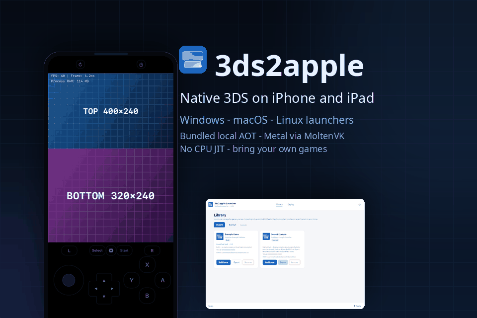
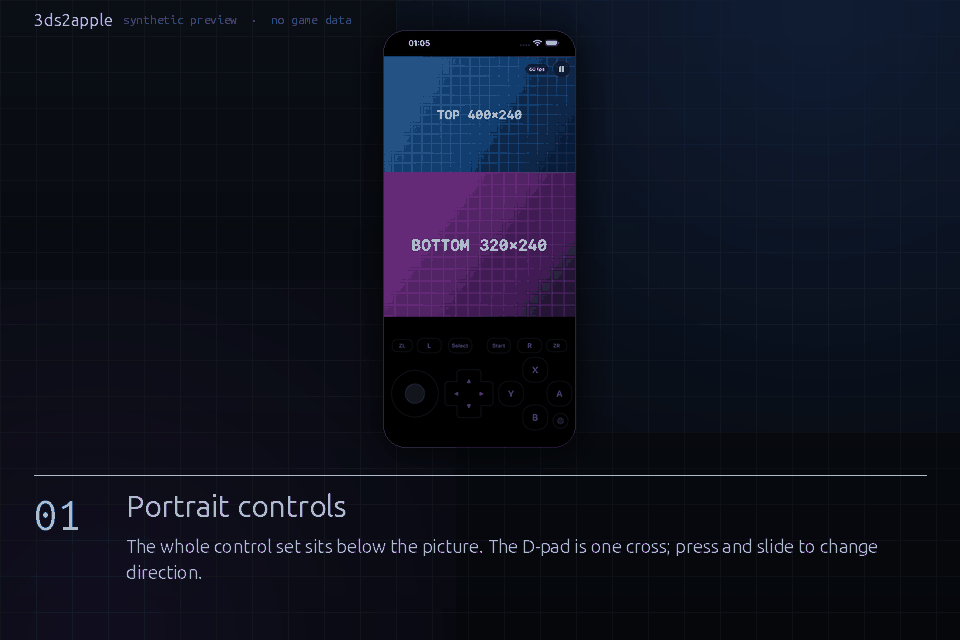
下载 · v0.1.5
每个 zip 根目录都带 LICENSE、NOTICE 与 THIRD_PARTY.md；Release 从不附带游戏数据。
3ds2apple-0.1.5-windows-x64.zip
单个自包含的 3ds2apple-launcher.exe，无需 Mac 即可编译、签名、安装并推送。exe 未做代码签名：请先核对下方摘要，再选择「更多信息 → 仍要运行」。
e37a924e4f4f694544842a908432024d4712c8d7de6cb202506d9762845b2e16
3ds2apple-0.1.5-macos-universal.zip
未公证：首次启动请右键 →「打开」。安装包尚未自包含（需要 Xcode、仓库检出与已构建工具），真机安装也尚未经维护者验证——见 issue #1。
bba678ce0862794b2de73a2901bf25410db355900a31c3a50254725cb9e6407c
GitHub 也会在 Release 页面显示每个资产的 SHA-256。可在本地计算后比对：
# Windows（PowerShell）
Get-FileHash .\3ds2apple-0.1.5-windows-x64.zip -Algorithm SHA256
# macOS
shasum -a 256 3ds2apple-0.1.5-macos-universal.zip为何原生
通用模拟器会内置 CPU 模拟器来解释执行游戏代码；3ds2apple 在你自己的电脑上把每款游戏重编译一次，之后在手机上直接运行原生 ARM64 代码。
导入你合法拥有并自行导出的已解密 .3ds/.cci；只读取 ROM 头与 SMDH 元数据。
静态重编译在电脑上提前翻译游戏代码；生成的代码不会提交或分享。
用本机 LLVM（Windows）或 Apple clang（macOS）编译 GamePack，再由启动器合成不含 ROM 的基础 IPA。
PICA200 GPU 路径转换为 Metal；GPU presenter 绘制预设屏幕布局，每帧零屏幕回读。
发布路径是 AOT 代码加 Zakuro HLE 运行时；iOS 上不会执行 JIT 编译的游戏代码。
每款选中的游戏都是独立的 GamePack，与 GameCatalog.json 一起进同一个已签名 App；增删游戏只需重新部署。
App 不发起网络请求、不收集任何数据；诊断报告由你在暂停菜单手动导出。
功能
全屏游玩、完整的 New 3DS 键位、GPU 绘制的屏幕布局，以及一个包办整条流水线的启动器。
没有标题栏、卡片边框或游戏名；画面上只有帧率胶囊、悬浮暂停按钮和你的虚拟按键。
每款游戏是一个 GamePack；catalog 与推送的游戏数据同行，推送的数据在重装后仍然保留。
十字键、A/B/X/Y、L/R、ZL/ZR、Start/Select、真模拟量 Circle Pad 与 New 3DS C 杆，并支持手柄映射。
横向六种、纵向三种预设，横竖各自独立；所有预设都由 GPU presenter 绘制。
暂停 → 虚拟按键选项 → 编辑布局：在暂停画面上拖动每个控件，点中央的完成保存并继续游戏。
在暂停菜单保存/读取当前游戏状态，并可导出含帧耗时、卡顿计数与日志的诊断报告。
右上安全区的悬浮 FPS 胶囊，默认开启，可在虚拟按键选项里关闭；画面上不显示其他内容。
Hybrid、LargeTopRight、TopFullWidth 让所有预设都走 GPU 路径、每帧零屏幕回读；自定义布局仍会回读。
屏幕布局
设置 → 显示 → 屏幕布局 里横竖各自独立。预设由 GPU presenter 绘制；自定义布局走屏幕回读路径，并从下一次加载游戏起生效。
与纵向分别设置。自定义布局可按百分比编辑或直接拖动，并带实时预览。
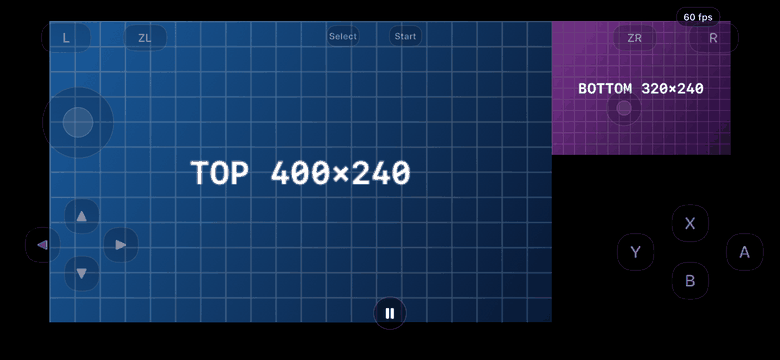
一个大的上屏，下屏放在旁边。
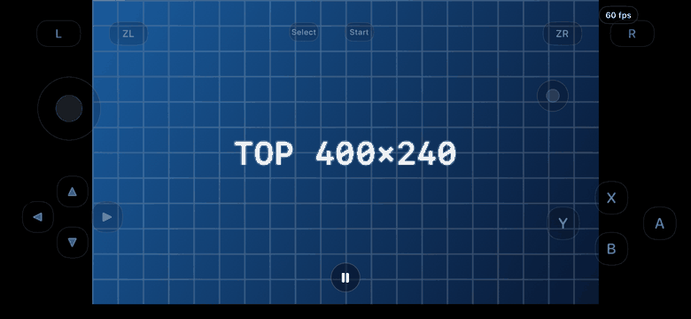
只显示上屏，铺到手机允许的最大宽度。

上屏与下屏并排，两块都完整可见。

一个大的上屏 + 右侧上下两个小屏。
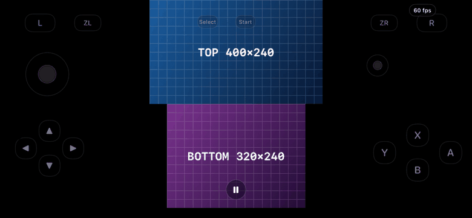
两块屏幕保持原始相对大小与形状。
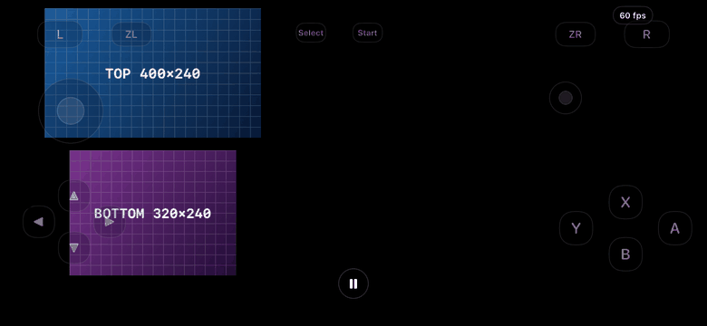
按百分比或拖动把两块屏幕放到各自的矩形；从下一次加载游戏起生效。
纵向时整组虚拟按键位于画面下方的空白带，不会遮挡屏幕。
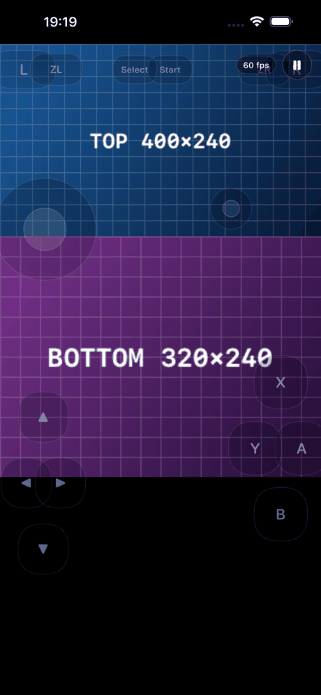
上屏满宽在上、下屏同宽在下；按键位于两者下方。
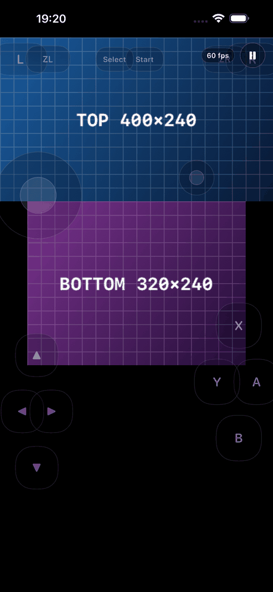
两块屏幕保持原始相对大小与形状。
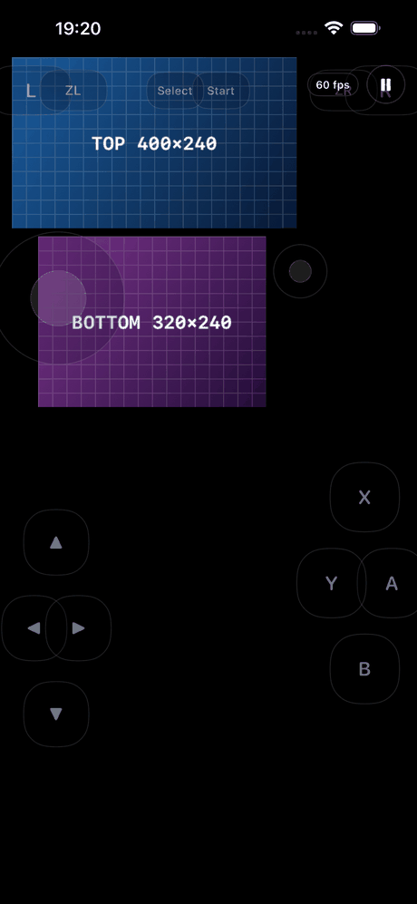
百分比输入并带实时预览，也可直接拖动屏幕；从下一次加载游戏起生效。
屏幕旋转与方向保留；渲染分辨率（1x–4x）仍在下次加载游戏时生效；旧的画面比例与整数缩放开关已在 0.1.5 移除。
虚拟按键
屏幕上的按键是完整的 New 3DS 键位，带真模拟量摇杆，并可在暂停菜单里逐项自定义。


显示/隐藏虚拟按键、显示帧率、游戏内编辑布局、逐键切换、把每个按钮或组调整为 10%–200%、调整透明度、重置为默认。显隐与大小是全局设置，横竖屏位置各自独立。
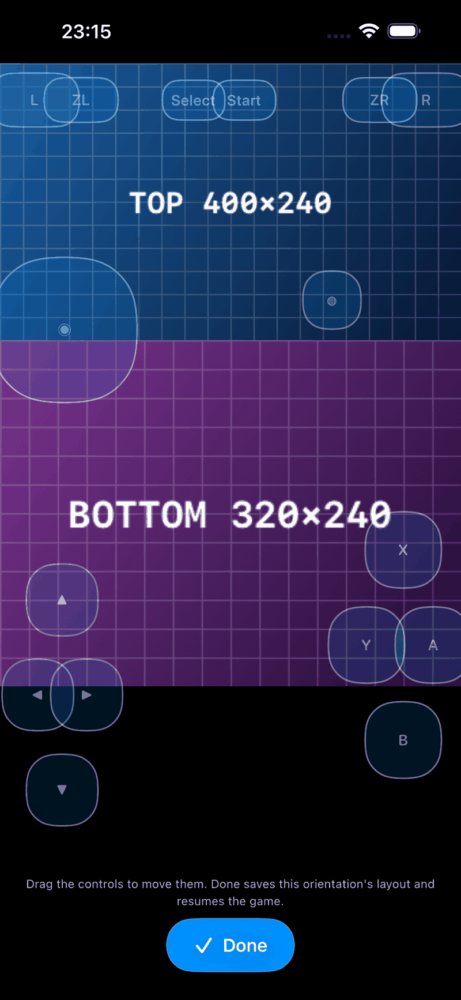
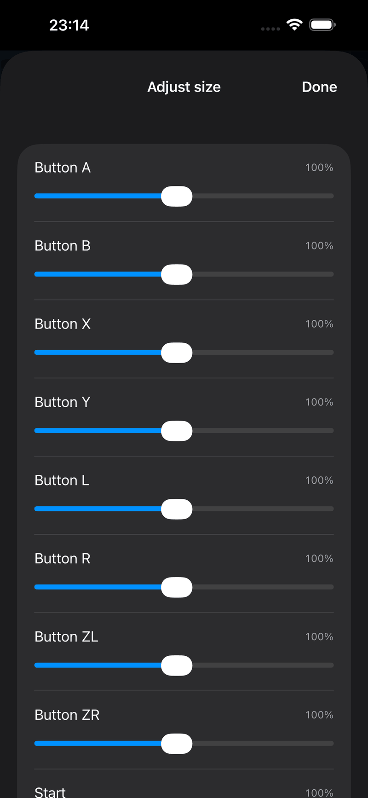

截图
Windows 与 macOS 启动器，以及 App 自己的设置页。启动器截图使用内置合成演示条目；App 截图均为合成预览，不包含游戏数据。

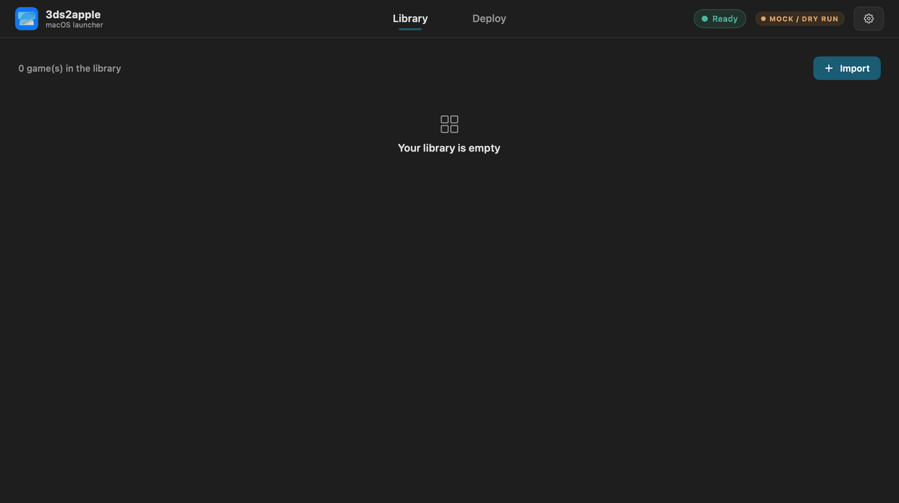
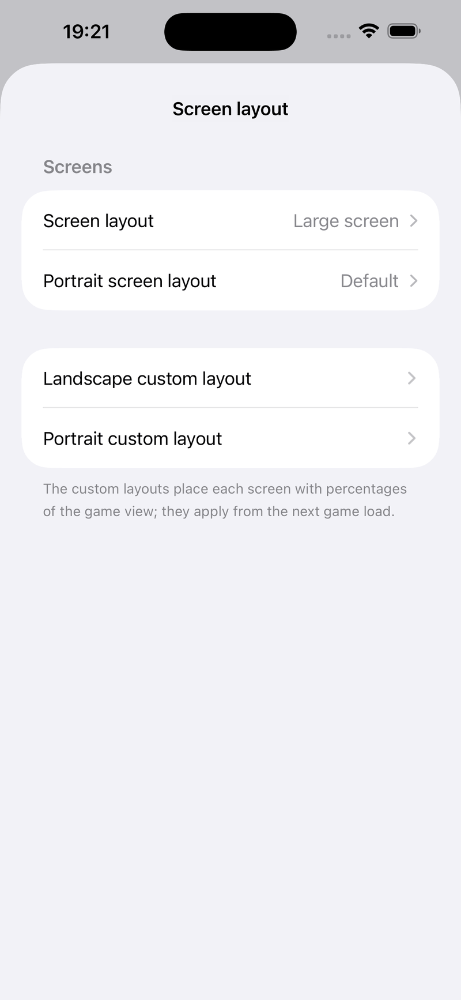
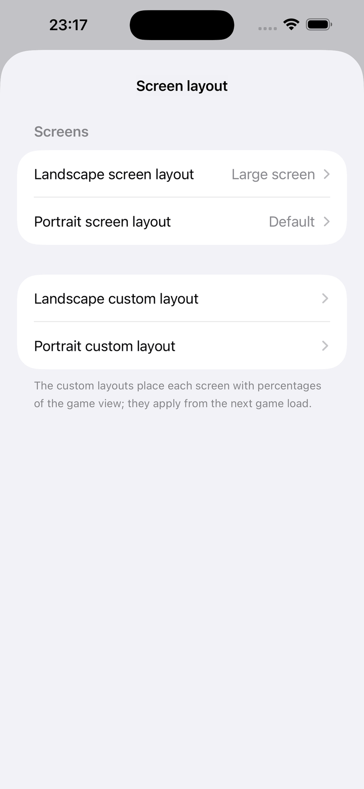
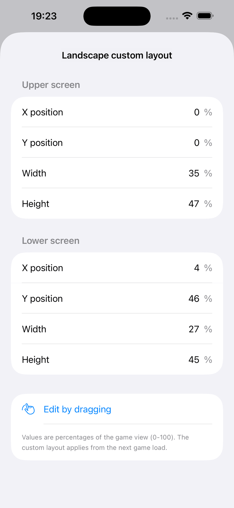
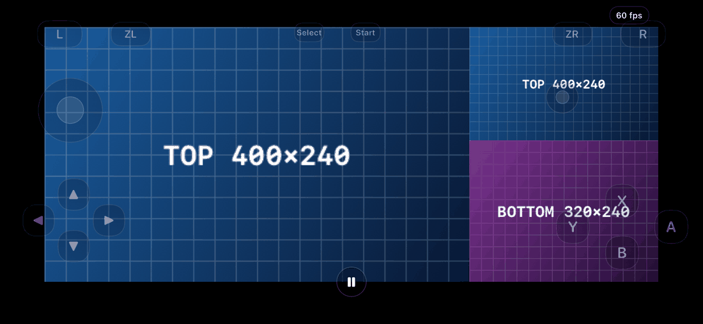
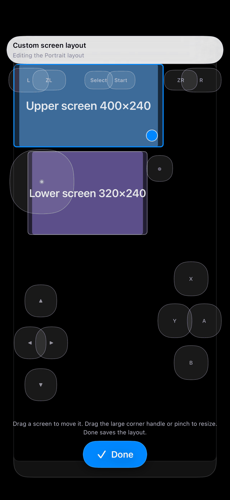
快速开始
完整说明（含排错与手机数据目录）在 README；这里是精简版。
你需要：一个你合法拥有并自行导出、已解密的 3DS ROM；一台开启开发者模式、iOS 16+ 的 iPhone/iPad；一根 USB 线；以及用于签名的你自己的 Apple ID。不附带任何游戏数据、密钥或 BIOS。
3ds2apple-<version>-windows-x64.zip 到一个可写目录（不要放 Program Files）。安装 Apple Devices，让手机可通过 USB 连接。3ds2apple-launcher.exe。exe 未做代码签名：先核对摘要，再选择「更多信息 → 仍要运行」。运行一次 Settings → self-test，应显示绿色通过。.3ds/.cci。只读取 ROM 头与 SMDH 图标/元数据。3ds2apple-<version>-macos-universal.zip：得到 3ds2apple-launcher.app（未公证——首次启动请右键 →「打开」）。xcodegen、仓库检出以及已构建的工具。devicectl 安装合成后的 IPA，启动器再推送游戏数据。macOS 真机安装尚未经维护者验证——见 issue #1。Windows 包是已验证路径。
免费 Apple ID：每台设备 3 个 App、签名约 7 天有效——重新部署即可续期。付费开发者账号可解除这些限制。游戏数据位于 Documents/Games/<TITLEID>/；存档与存档状态位于 App 容器。卸载 App 会清除其数据；电脑上的 ROM 不受影响。
常见问题
不是。它是原生移植：每款游戏的代码先在电脑上静态重编译为 C，编译成 ARM64 GamePack，再通过 Zakuro HLE 运行时原生执行。没有 CPU 模拟器、没有 CPU JIT，也没有解释器兜底。
不需要。用你自己的 Apple ID 签名合成后的 App：Windows 走内置官方 Impactor，macOS 走 Xcode 自动签名。手机需开启开发者模式并通过 USB 连接。免费 Apple ID 每台设备允许 3 个 App、签名约 7 天；重新部署即可续期。
只来自你自己。3ds2apple 不附带任何游戏、ROM、解密密钥、BIOS 或系统文件，也不提供下载链接或盗版支持。请导入你合法拥有并自行导出的已解密 ROM；只读取 ROM 头与 SMDH 元数据。
不能。兼容性因游戏而异，也不提供兼容性或性能保证。部分游戏可能无法启动或渲染异常——个别游戏的某些菜单仍可能出现花屏（issue #2）。提交带 title ID 的兼容性报告会很有帮助。
iOS 不允许 JIT 编译的可执行内存，项目也刻意让发布路径保持 AOT：在电脑上产出原生 ARM64 代码，图形走 Metal。一旦检测到解释器，App 会拒绝启动。
读取 ROM 头与 SMDH 元数据，用本机 LLVM 或 Apple clang 为每款选中的游戏编译 GamePack，把不含 ROM 的基础 IPA 与 GameCatalog 合成，用你的 Apple ID 签名安装，然后只把 GameRom.cci 与 GameInfo.json 推送到 App 的 Documents 目录。
它是开发者预览：安装包尚未自包含（需要 Xcode、仓库检出与已构建工具），真机安装也尚未经维护者验证——issue #1 跟踪验收进展。Windows 启动器是已验证路径。
不会。App 不发起网络请求、不收集任何数据；诊断报告由你通过系统分享面板手动导出。国行 iPhone 首次出现文本输入时，系统可能弹出「允许无线数据」提示——这是已知的系统行为。选择「不允许」（或仅 Wi-Fi）即可继续使用；重装后可能再次出现。
推送的游戏数据位于 Documents/Games/<TITLEID>/，可在「文件」App 中看到。存档与存档状态位于 App 容器。彻底卸载会清除 App 数据；电脑上的 ROM 不受影响。诊断导出写入 Documents/Diagnostics/（保留最近五份）。
欢迎兼容性报告、构建报告与 Pull Request——先看 CONTRIBUTING.md，再提 GitHub issue 或加入 Discussions。请勿上传 ROM、密钥、BIOS、生成的 C、已签名 IPA 或含游戏画面的截图。
诚实边界
这些都是已知问题并有跟踪记录。请把兼容性与性能视为因游戏而异。
个别游戏的某些菜单上屏可能出现花屏。诊断路径已检查，但修复仍在排查中——issue #2。
任意矩形使用屏幕回读路径，因此比 GPU 预设慢。自定义布局从下一次加载游戏起生效。
macOS 启动器尚未自包含，真机安装尚未验证——issue #1。Windows 路径才是已验证的。
它通过 New 3DS 摇杆 API 上报；不读取该 API 的游戏会忽略它，用旧运行库构建的壳也不提供。
部分游戏可能无法启动或运行较慢。README 里的参考数据来自维护者对特定游戏的实测，不构成保证。
Azahar 风格的按键滑行与相对摇杆中心选项尚未实现。横向虚拟按键按皮肤几何叠在画面上。
不提供 ROM、密钥、BIOS、系统文件或游戏资源，也不提供盗版支持。请只使用你合法拥有并自行导出的游戏。3ds2apple 与 Nintendo 无任何隶属关系。